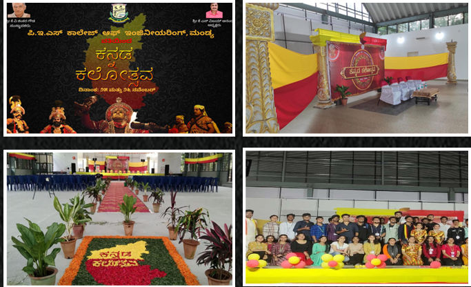

Kannada Kalothsava
The Indian Society for Technical Education (ISTE) in collaboration with Institute of Electrical and Electronics Engineers (IEEE) and Youth Red Cross Wing (YRCW) successfully organized the annual "Kannada Kalothsava" on 25th and 26th November, 2022, at the PES College of Engineering, Mandya campus. The event commemorated the Karnataka Rajyotsava, a significant state festival, with a series of engaging activities and competitions.
Day 1
Day 1 witnessed a spirited Flash Mob, followed by the inauguration ceremony by the esteemed chief guest, K S Vijay Anand President, PES college of engineering and Dr. R M Mahalinge Gowda Principal, PES college of Engineering. The day concluded with cultural performances, including captivating dance forms, leaving the audience enthralled until 8 p.m.
Day 2
Day 2 began with an enthralling Rangoli competition and the inauguration of the Food Fest by the college's Principal. All the Departments actively participated in setting up stalls with a diverse range of traditional Karnataka cuisine, enhancing the festivities. The event concluded at 3 p.m., with the hope of celebrating more cultural festivals within the college community in the future.
This event celebrated our rich heritage and also paves the way for fostering future cultural exchanges and experiences within our college community.